ADIF Editor
A native macOS editor for amateur radio ADIF log files, with purpose-built tools for Parks on the Air.
A native macOS editor for amateur radio ADIF log files, with purpose-built tools for Parks on the Air.
POTA activators log with contest and digital-mode software — WSJT-X, MSHV, N1MM,
FT8CN — none of which knows anything about Parks on the Air. The .adi files
they produce are valid ADIF but lack the MY_SIG_INFO field carrying the park
reference, which POTA's uploader needs. Every activation therefore ends in the same
manual edit: add a column, put the park reference on every row, save it under a
particular filename. An n-fer — one activation inside several parks at once — needs that
done once per park, into separate files.
ADIF Editor makes that one command, and around it does the editing a log actually needs: correcting a mistyped callsign, trimming the contacts that were not part of the activation, removing a QSO logged twice, filling in the name and county you would otherwise type by hand.
A file you open and save without editing comes back byte-for-byte identical to what went in. Not merely field-preserving — identical, down to field-name casing, zero-length fields, line endings and header bytes. Vendor extensions and fields the app has never heard of survive untouched, because nothing it does not understand is ever rewritten. Section 10 covers the single exception.
It is not a logger: no radio control, no clock, no QSO entry form, no logbook of its own. It edits files that loggers produce. It never uploads anything — you upload to POTA yourself. It reads and writes one format, ADI, and no other: no ADX, Cabrillo, CSV or JSON. There is no telemetry, no analytics, no crash reporting and no update check.
It makes exactly one kind of network connection, and only when you ask for it by name: a QRZ callsign lookup (section 8). With no QRZ credentials stored, the app never opens a connection at all.
ADIF Editor needs macOS 14 or later. It is a universal build and runs natively on both Apple Silicon and Intel.
Download the .dmg, open it, and drag ADIF Editor onto
the Applications shortcut beside it.
It will, and that is expected — it is not a sign that anything is wrong with the download. ADIF Editor is ad-hoc signed and not notarized. Notarizing requires a paid Apple Developer account, which this project does not have, so macOS treats the app as coming from an unidentified developer and refuses to open it the first time.
There are three ways past it. Pick one.
1. Open Anyway. Double-click the app and dismiss the warning. Open System Settings ▸ Privacy & Security, scroll to Security, and click Open Anyway beside the message naming ADIF Editor. Confirm, and authenticate if asked. You do this once.
2. Remove the quarantine flag, if you would rather use the Terminal:
xattr -dr com.apple.quarantine "/Applications/ADIF Editor.app"
3. Build it from source. An app you build yourself is not
quarantined, so none of this applies to it. The repository's README.md has
the two commands.
Control-clicking an app and choosing Open used to bypass this. Apple removed that route in macOS 15 for apps Gatekeeper blocks. If you find instructions saying otherwise — including in older projects of mine — they are out of date. Use Open Anyway.
Open a log with ⌘O, by dragging it onto the app's icon, or by
double-clicking an .adi file once ADIF Editor is the app macOS associates
with it. Recently opened logs are under File ▸ Open Recent.
FT8CN writes ADIF content to files named .txt. Other programs use
.adif, or no extension at all. ADIF Editor judges a file by what is inside
it and opens what it is given, so there is nothing to rename first. The screenshots in
this manual are of an FT8CN log named
FT8CN6469053684847039306.txt, opened exactly as it came off the phone.
Real logs are sometimes malformed — a truncated download, a hand edit that went wrong, a program that miscounts the length of a field holding accented characters. ADIF Editor recovers what it can, opens the file anyway, and tells you what it had to do in a banner under the title bar. Section 10 explains what those messages mean.
There is exactly one problem it will not open past: a file that is not valid UTF-8. Guessing at the encoding would silently change the bytes of a log you did not edit, so instead it refuses and names the byte offset of the first invalid sequence.
One window per log. Every QSO is a row; every ADIF field in the file is a column.
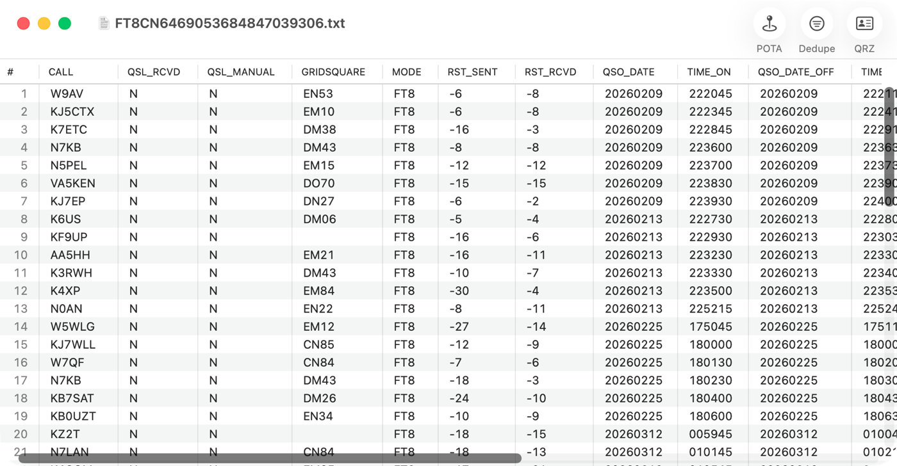
The columns are not a fixed list ADIF Editor decided on — they are the fields your
logger actually wrote. A file from FT8CN carries different fields from one written by
WSJT-X, so the two open with different columns, and neither is wrong. Fields the ADIF
specification has never heard of get a column too, including a logger's private
APP_* extensions.
A field takes the place it holds in the first QSO that carries it, and once a column has been placed it does not move. That matters more than it sounds: it means clearing a cell in the first row does not shuffle its column off to the far right.
An empty cell means the field is absent from that QSO, or present and empty. Both are shown the same way, and both are preserved when you save.
Click a row to select it, then click the cell again to edit it. Type, and press Return or Tab to commit — or Escape to abandon what you typed. Every edit is undoable with ⌘Z, all the way back to the file you opened.
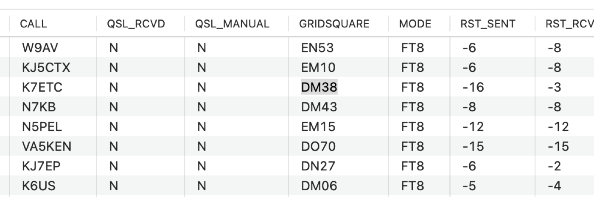
GRIDSQUARE cell open for
editing.Clearing a cell removes that field from the QSO — that is what an empty field means when the file is written back. This is the one place the app treats "empty" as a deliberate act rather than something to preserve, because you did it on purpose.
Click any column header to sort on it; click again to reverse. Sorting is a view of
the log, not an edit to it — but it is the log's order that gets written when you save,
so a sort you leave in place is a sort you will find in the file. Sorting on
QSO_DATE and TIME_ON is the usual way to put a log that came
out of several sessions back into the order it happened.
Click a row to select it; shift-click to extend the selection, or command-click to add one row at a time. ⌘A selects everything.
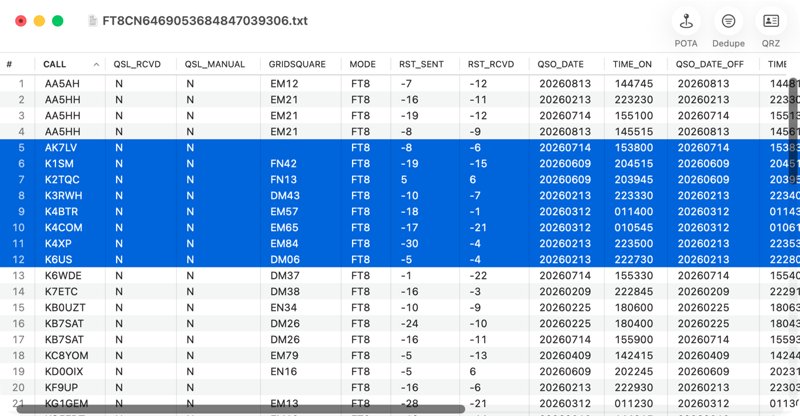
CALL — note the sort arrow in the
header — with a contiguous block of QSOs selected. Sorting first is what makes a
single drag enough.The Delete key removes the selected QSOs, and so does Edit ▸ Delete. Both are undoable. Trimming a log down to the contacts that were part of one activation is normal preparation for an upload, and it is the reason the output filename can take the earliest date in the file without having to guess anything: you have already removed the QSOs that do not belong.
Selection in the grid is whole rows, so ⌘X, ⌘C and ⌘V operate on whole QSOs rather than on a rectangle of cells. Pasted QSOs land below the selection, or at the end if nothing is selected — so pasting one log into another appends it.
What goes on the clipboard is ADIF text. QSOs copied here paste into another log, or into a text editor, and come back in as themselves.
Cut, copy and paste apply to the text you are editing, which is what you would expect from any text field. They only move QSOs when the grid itself has focus.
⌘F opens the find bar. Type, and the grid moves its selection to the first QSO containing what you typed. ⌘G steps to the next match and ⇧⌘G to the previous, wrapping around the ends; the arrows beside the field do the same. Escape or Done closes it.
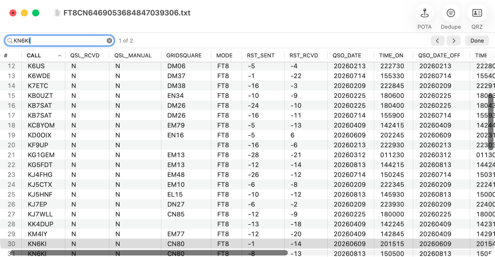
Every column is searched at once. A callsign, a park reference, a grid square and a
comment are all just text you half-remember, and having to say which column it lives in
before you can look for it is a question you should not have to answer. The match is
case- and accent-insensitive. Field names are not searched — typing
CALL finds the QSO whose comment mentions a call, not every QSO in the
log.
Find moves to one QSO at a time, so it cannot help you delete every contact
someone else made from your callsign. Sorting can: click the
OPERATOR column header and the QSOs that are not yours become one
contiguous block, which you can select in a single drag and delete in one keystroke.
The same trick works for a band, a mode, or a date. This is deliberately the only
mechanism — a filter that hides rows was built, tried, and removed as far more
machinery than the job needs.
Edit ▸ Find Duplicates…, ⌘D, or the Dedupe toolbar button. A log that has been exported twice, or that has had a session appended to it by hand, ends up with the same QSO in it more than once. POTA will reject the repeat, and it is easier to remove it here.
The first sheet asks what "the same" means for this log. The fields ticked by default
are QSO_DATE, CALL, BAND and MODE —
what an activator almost always means by a duplicate — and only fields the file actually
carries are offered.
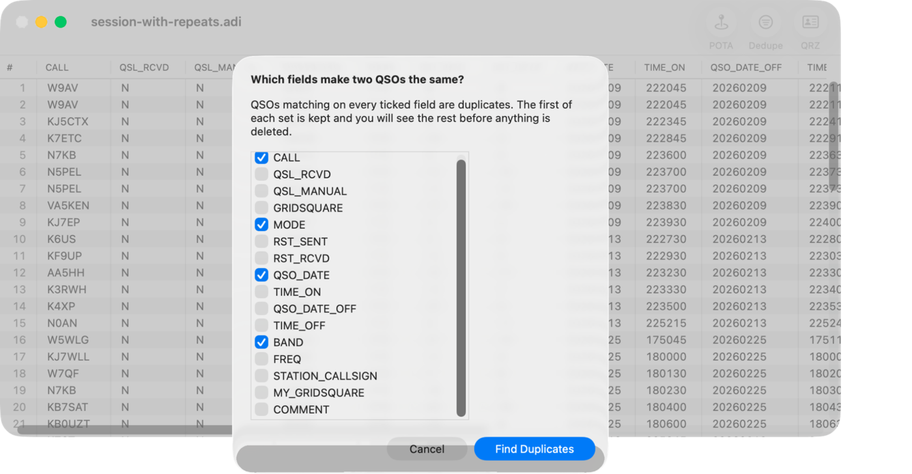
The second sheet is the point of the whole command: every QSO that would be deleted is listed before any of them is, one line each, showing the row number, the values that matched, and the row it duplicates.
#12 W1ABC · 20260209 · 20m · FT8 — same as #3
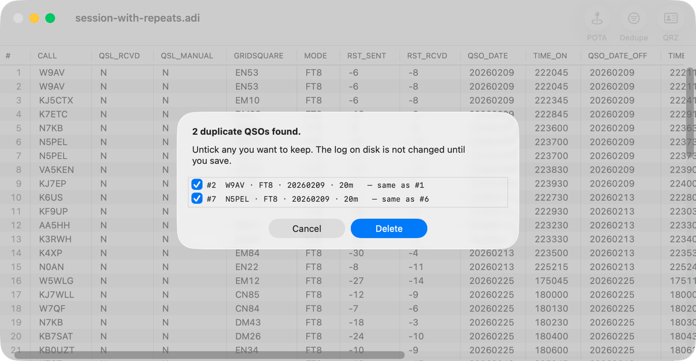
They arrive all ticked, because agreeing with the whole list is the common case. Untick anything you would rather keep. The first QSO of each matching set is never offered for deletion — only the repeats. Delete removes what is still ticked, in one undoable step, and nothing reaches the file on disk until you save.
Edit ▸ Fill from QRZ…, ⌘L, or the QRZ toolbar button. It fills in the station details you would otherwise type by hand: name, town, state, county, grid square, country, DXCC, and CQ and ITU zones.
This is the only feature that uses the network, and it needs a QRZ XML subscription — the lookup is QRZ's service, billed by them, not something this app provides.
Enter your QRZ username and password once, in ADIF Editor ▸ Settings… (⌘,).
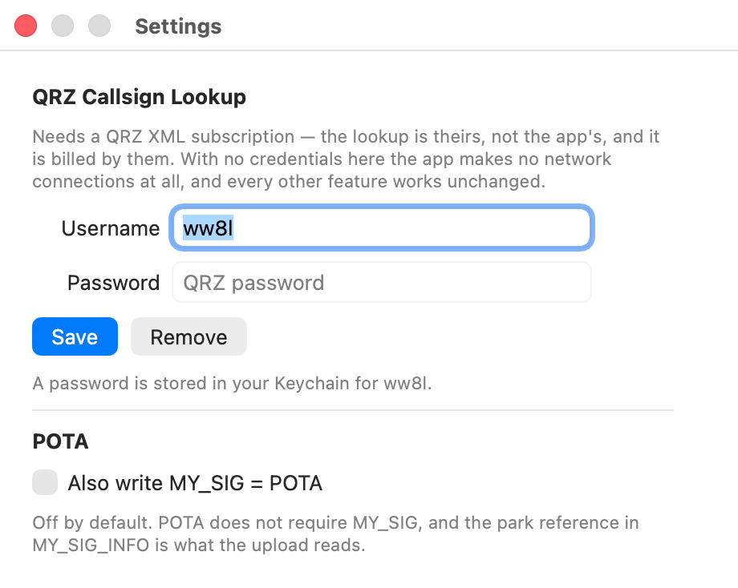
Into your Keychain, and nowhere else — never a preferences file, never a log, never the app's own storage. Remove deletes it, and the app is offline again the moment it is gone: with no credentials stored it does not so much as attempt a connection. One callsign at a time goes out. Your log never does.
Select the QSOs you want filled, or select nothing to cover the whole log — the confirmation sheet says which of those it is about to do, and how many callsigns that means, because looking up four hundred QSOs when you meant four is the kind of surprise that costs an API quota.
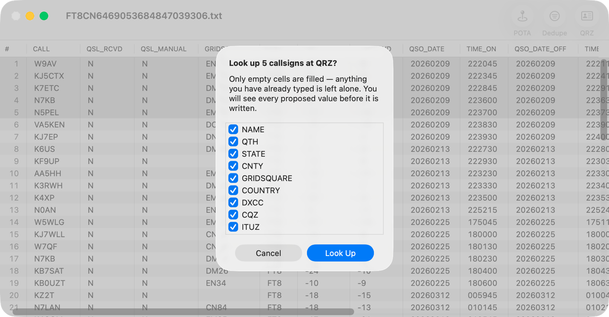
Tick the fields you want filled. The choice is remembered for next time. A progress sheet counts through the callsigns while it runs and can be cancelled part way; what has already been fetched is still offered.
Then, as with duplicates, every proposed change is shown before any of it is applied, one line per cell:
#12 W1ABC GRIDSQUARE → FN32aa
Untick anything you disagree with, and Fill applies the rest as a single undoable edit.
Callsigns QRZ has no record of are named in the review sheet rather than passed over in silence, as is any error that stopped the batch early. Two fields QRZ returns are deliberately not offered: latitude and longitude, because the grid square already carries the position at the precision a log needs, and the street address, because a home address is not log data and should not end up in a file you upload.
The lookup never overwrites a value that is already there. If you have typed a name or corrected a grid square, QRZ's version of it is not offered and cannot replace yours. Corrections are yours to make by hand — the app fills blanks and creates columns, and does not second-guess data you entered.
POTA ▸ Stamp Park Reference…, ⌘P, or the POTA toolbar button. This is the reason the app exists.
Type one park reference and you get a file stamped with it. Type several, separated by commas, and you get one file per park — each holding every QSO, because being inside three parks at once means each contact counts for all three. It is the same command either way; the number of references you type is what decides.
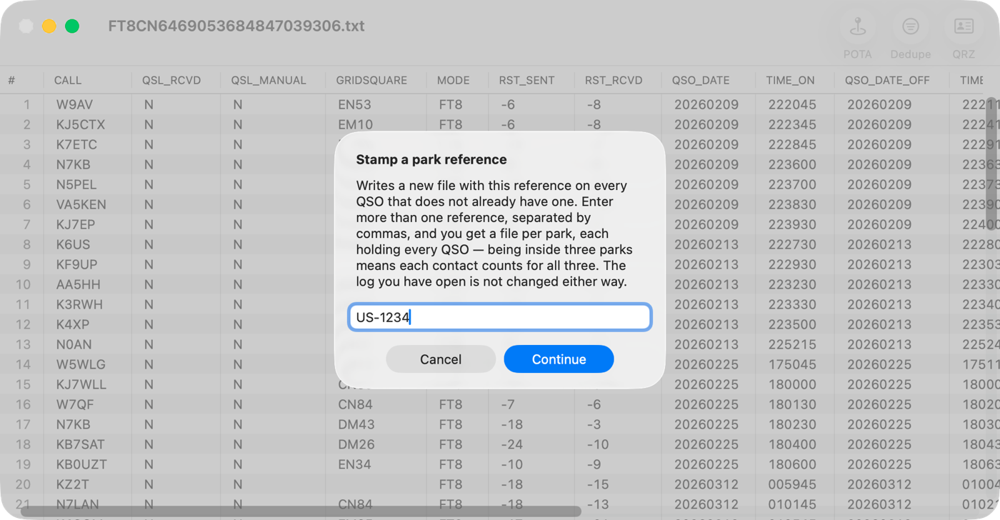
References are validated leniently: anything shaped unlike US-1234 gets a
question rather than a refusal, because park numbering is not this app's business to be
certain about.
Next you choose a destination folder, and then confirm the filenames. They are proposed in POTA's convention:
WW8L@US-1234 20260209.adi
| Part | Where it comes from |
|---|---|
WW8L |
STATION_CALLSIGN, falling back to OPERATOR —
and a portable callsign's / becomes a -, since
a slash is a path separator |
US-1234 |
the park reference you typed |
20260209 |
the earliest QSO_DATE in the log — which is why trimming
the log first matters |
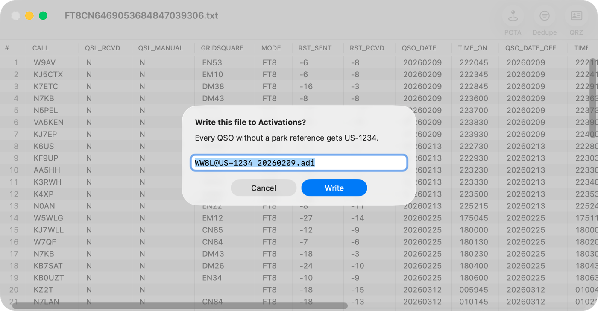
Every name is editable before anything is written. If the log carries no callsign at all, the name is proposed without one and the sheet says so, rather than putting a second question in front of you. If a name would collide with a file already in that folder, you are asked before it is replaced; if it would collide with the log you have open, or with another of the files about to be written, the app refuses outright and sends you back to the names.
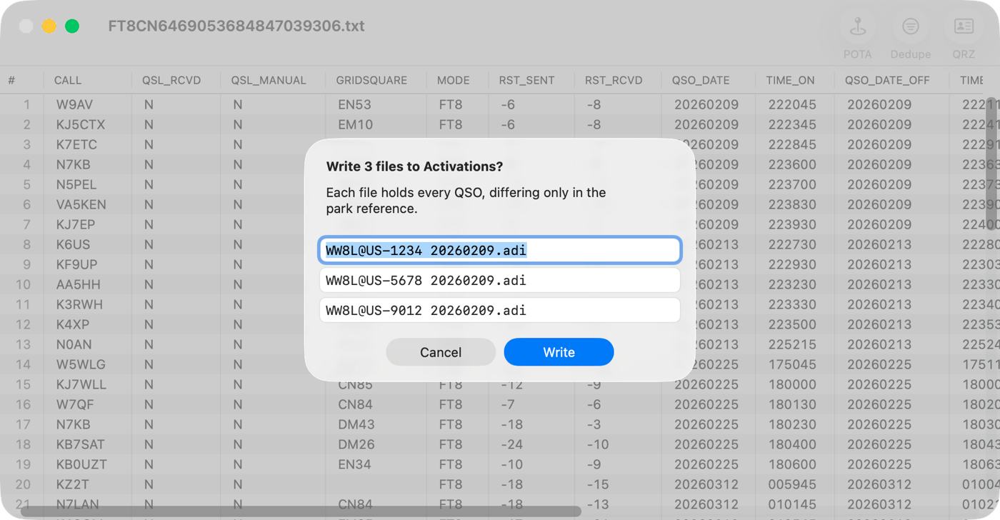
Every one of these outputs is a new file. The log that came off the radio is not modified, not rewritten, and not even marked as changed — whatever you do here, it is still on disk exactly as it was. That is why one park and ten take the identical path.
If some QSOs already carry MY_SIG_INFO, you are asked once whether to
replace those values in the output or keep them.
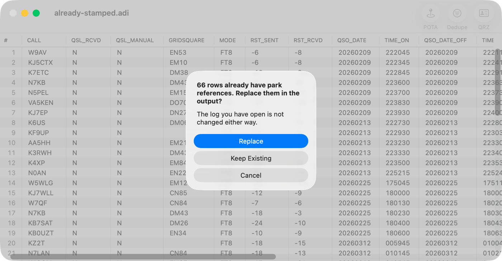
Empty cells are filled without comment; existing values are never replaced silently. This is the one place in the app where an automated command writes over a value you might have put there, and it is permitted only because the outputs are new files and it always asks first.
Settings has one POTA option: whether to also write MY_SIG =
POTA alongside the reference. It is off by default. POTA does not require it
— MY_SIG_INFO is what the upload reads.
⌘S saves in place; File ▸ Save As… writes elsewhere; Revert to Saved throws away everything since the last save. There is no autosave, and nothing in the app writes to the file you opened except Save. Closing a window with unsaved edits asks first.
Open a file and save it without editing anything, and what lands on disk is identical to what came in — the same bytes, not merely the same fields. That covers things a log editor could reasonably be expected to tidy up and deliberately does not: the byte-order mark if there was one, CRLF line endings if the file used them, a missing header, the casing of every field name as it was spelled, zero-length fields, ADIF type indicators, and the order fields appear in within each QSO.
Fields the app has never heard of are covered by the same rule, because nothing it
does not understand is ever rewritten. A logger's private APP_* extensions
and USERDEF definitions come back out exactly as they went in.
A field whose declared length is wrong is written back correct. Copying the wrong number out again would be preserving corruption rather than preserving data. Every such case is reported in the banner, so a file that changes on save always told you why first.
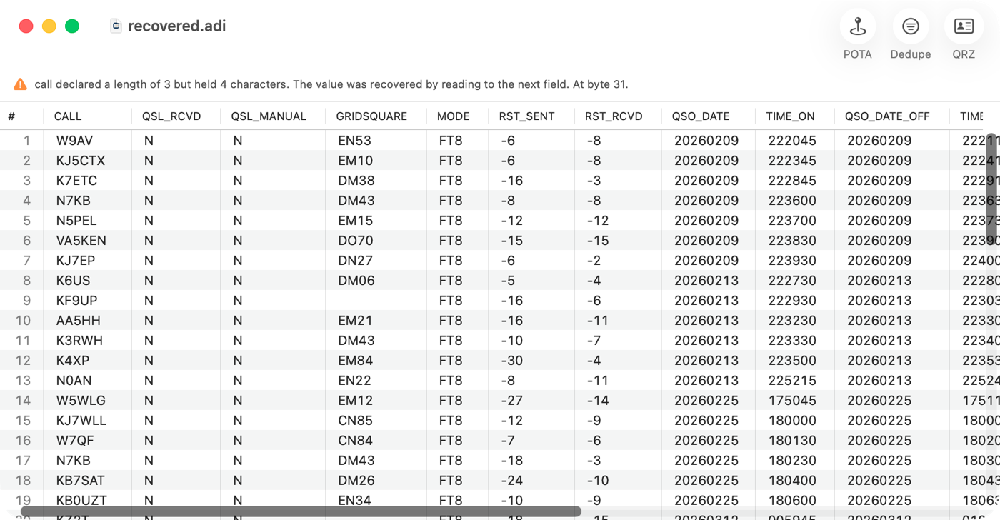
| What it says | What happened |
|---|---|
| declared a length of n but held m characters | The field's length was wrong. The value was recovered by reading up to the next field, and will be written back with a corrected length. |
| matched only when read as bytes rather than characters | The logger counted bytes where ADIF counts characters — normal when a value holds accented characters or an emoji. The value is intact. |
| which is not a number | The length was not numeric at all. The field was kept and its value recovered. |
| Unexpected text between fields | Something that belongs to no field — a stray separator, a note someone typed in. It is left exactly where it was. |
| characters could not be read as ADIF and were skipped | A run the parser could not make sense of. It resynchronized at the next well-formed tag rather than giving up on the file. |
| ends before the last QSO's <EOR> | A truncated file — an interrupted download or copy. The final QSO is kept with the fields it had, rather than discarded. |
| carries field twice | One QSO has the same field twice. Both are kept and both will be written back, but the grid shows and edits only the first — so clearing that cell reveals the second rather than emptying it. |
| Key | Does |
|---|---|
| ⌘O | Open a log |
| ⌘S | Save |
| ⇧⌘S | Save As… |
| ⌘W | Close the window |
| ⌘Z | Undo |
| ⇧⌘Z | Redo |
| ⌘X ⌘C ⌘V | Cut, copy and paste whole QSOs — or text, while editing a cell |
| ⌘A | Select every QSO |
| Delete | Delete the selected QSOs |
| ⌘⌫ | Delete the selected QSOs, from the Edit menu |
| ⌘F | Find |
| ⌘G / ⇧⌘G | Find next / previous |
| ⌘D | Find duplicates |
| ⌘L | Fill from QRZ |
| ⌘P | Stamp a park reference |
| ⌘, | Settings |
| Return / Tab | Commit the cell you are editing |
| Escape | Abandon the cell you are editing, or close the find bar |
A bare ⌫ as a menu shortcut would be caught by the app before it ever reached a cell you were editing, and backspace would stop deleting characters. So the menu item carries ⌘⌫, while the bare Delete key still deletes QSOs whenever the grid itself has focus — which is the only time it could mean that.
Expected on first launch: the app is not notarized. Section 2 has the three ways past it. Nothing is wrong with the download.
.txt fileOpen it anyway. FT8CN and others write ADIF content under whatever extension they like, and the app judges by content. There is no need to rename anything.
Most often because there was nothing to fill: the lookup only writes into empty cells, so a log that already has names and grid squares has nothing for it to do — and the sheet says exactly that. Otherwise, check that the fields you wanted are ticked, that the QSOs you meant are selected, and that Settings shows credentials as stored. QRZ having no record of a callsign is reported by name.
If the banner mentioned a field appearing twice in one QSO, the grid is showing the first of the two. Clearing it reveals the second rather than emptying the cell. Both are in the file and both are preserved.
Windows remember the size and position you last used, shared across logs. If a remembered size no longer fits — a display that changed, or an external monitor that is no longer attached — the app notices and sizes the window to the log instead. Resize it once and the new size is what the next log gets.
The only fatal problem is a file that is not valid UTF-8. The message names the byte
offset of the first bad sequence. That usually means a genuinely corrupt file or one in
some older single-byte encoding; converting it with iconv and opening the
result is the way through.
Sorting is a view, but it is the view that gets written. ⌘Z undoes a sort like anything else, and reverting or reopening without saving leaves the file untouched.
ADIF Editor is free software under the GNU General Public License, version 3 or later. You may use, study, modify and share it freely. If you distribute a modified version you have to make your source available under the same terms, so that it stays open for whoever comes after you.
As with any licence of this kind, the program comes with no warranty of any kind, to the extent permitted by law; you use it at your own risk. The exact terms are in sections 15 to 17 of the licence, which ships with the source.
This is a clean-room implementation written against the public ADIF specification at adif.org. It is not derived from, affiliated with, or endorsed by any other ADIF editing tool.
ADIF Editor {{VERSION}} · Copyright © 2026 Tim Annable, WW8L ·
GPL-3.0-or-later
This manual was generated from docs/manual/manual.html on {{DATE}}.
Screenshots are of {{VERSION}} running on macOS.